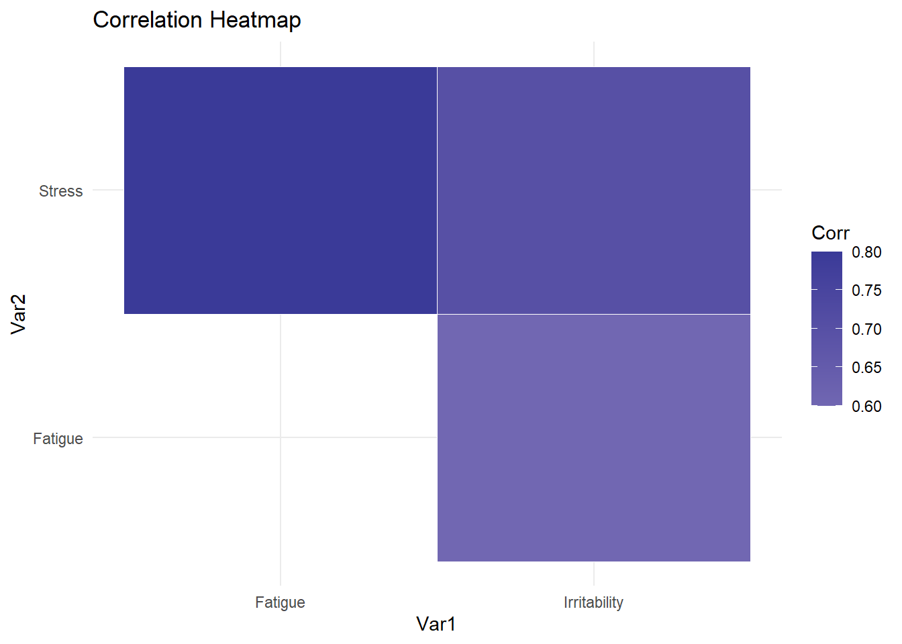
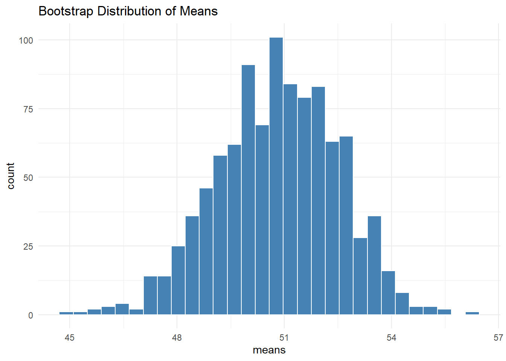
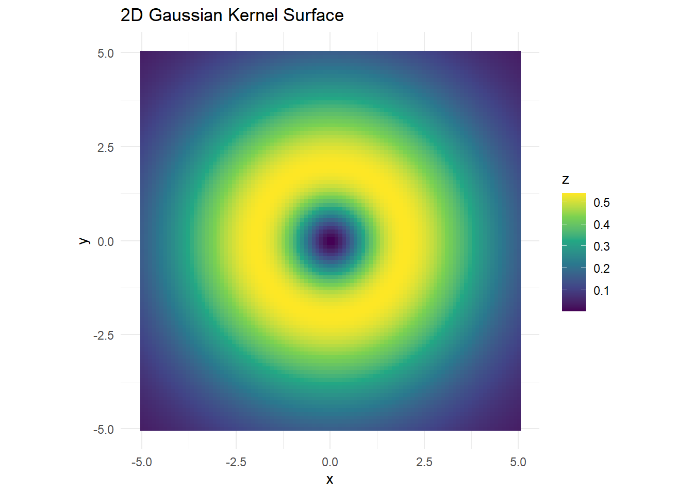
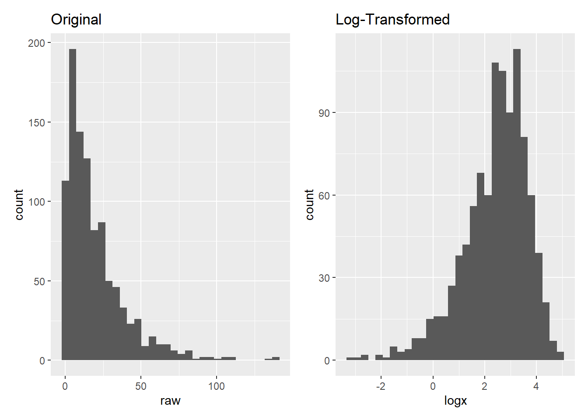
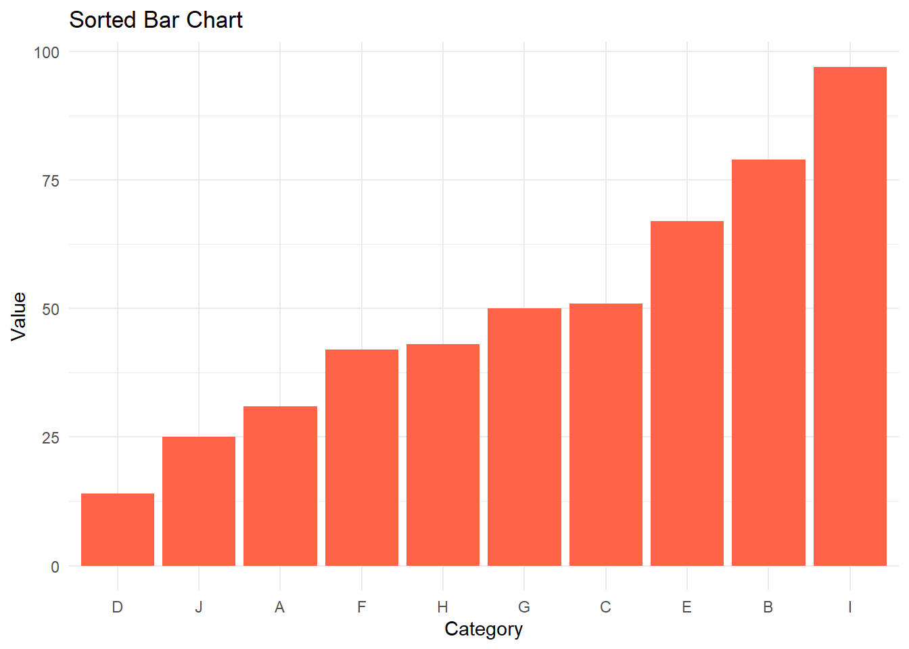
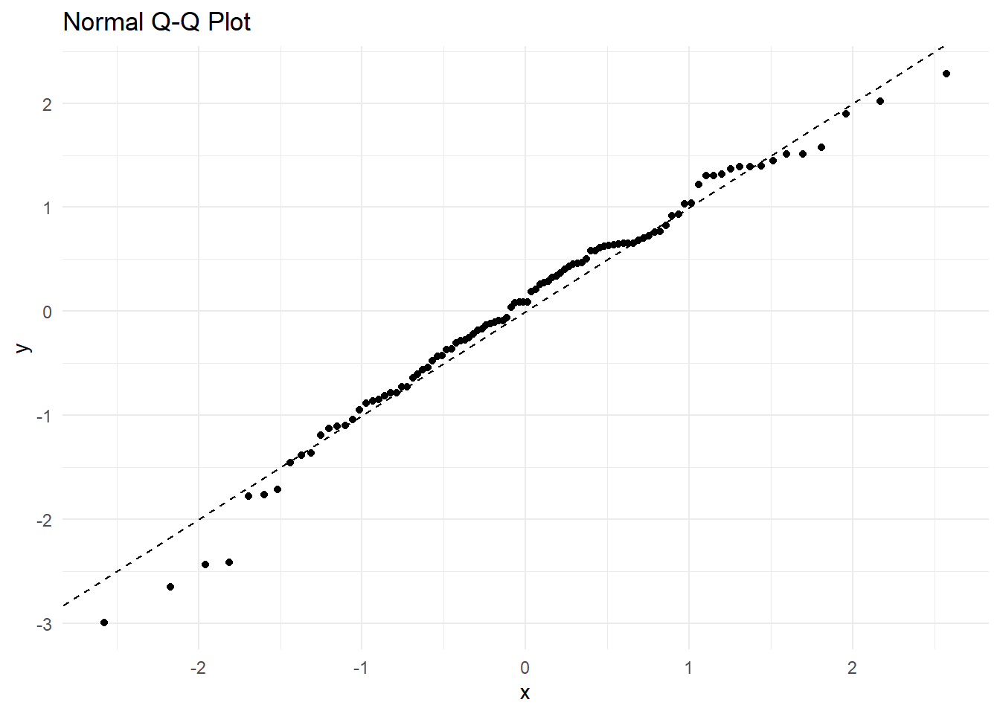
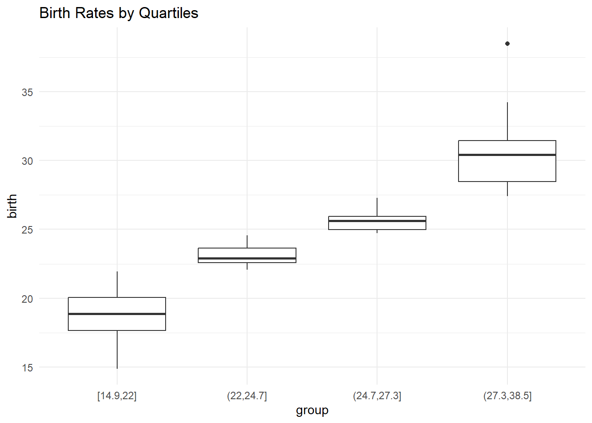
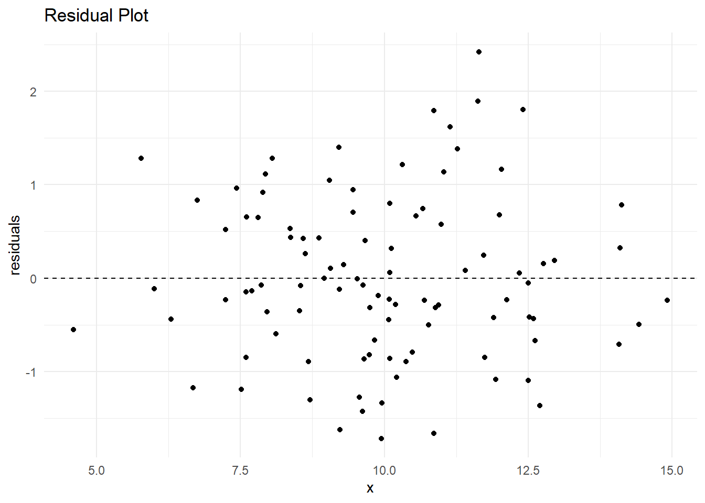
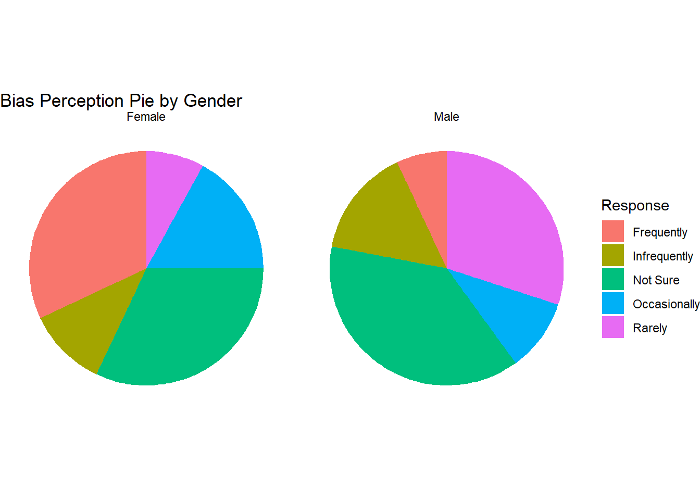

a <- data.frame(
Gender = c(rep("Male", 5), rep("Female", 5)),
Response = rep(c("Rarely", "Infrequently", "Occasionally", "Frequently", "Not Sure"), 2),
Percent = c(30, 15, 10, 7, 38, 8, 11, 17, 32, 32)
)Making a Pie: Data, Variables and ggplot2
1 Introduction
These notes walk you through the foundational concepts behind statistical graphics, focusing on the Grammar of Graphics and its application to building pie charts using data and variables. The content is grounded in Wilkinson’s theoretical model, which underpins the ggplot2 package in R.
Our journey proceeds step-by-step through the grammar pipeline, applying theory to practice with extensive plotting in ggplot2, and all data manipulation performed in base R for clarity. The goal is to offer you intuitive, visual, and practical mastery of ideas that may seem abstract at first.
2 From Pie Charts to Graphic Grammars
A pie chart may seem simple, but making it properly involves nearly every concept in the grammar of graphics. At a high level, a data pipeline feeds a graphic engine:
Source (data) → Make-a-pie (process) → Graphic → RendererYet, to generalise beyond pies, we must break this into components:
- DATA → what is observed
- TRANSFORMATION → how it is modified
- SCALE → how values map to display dimensions
- STATISTICS → summaries, aggregations
- GEOMETRY → shapes and marks
- COORDINATES → e.g., Cartesian vs polar
- AESTHETICS → visual mappings (colour, size, labels)
Let’s build the full pie chart pipeline from raw data and understand what each layer contributes.
3 Empirical Data and Data Functions
3.1 2.1 What is Empirical Data?
Empirical data arises from real-world observations: surveys, measurements, sensors, questionnaires. It is the most common kind of data you’ll analyse as a data scientist.
In R, empirical data is usually tabulated:
We’ll reuse this dataset throughout to build pie charts, bar charts, summaries, and models.
3.2 2.2 Data Functions
Data functions allow us to construct or reshape variables from raw data. In base R, this means:
subset()for selecting rowstable()for counting frequenciesas.factor(),as.numeric()for coercionmatrix()ordata.frame()constructors for structuring inputs
These functions prepare variables for graphics, where they become inputs to transformations and geometric elements.
4 Reshaping Data
4.0.1 Example: Correlation Matrix
mat <- matrix(c(1, 0.8, 0.7, 0.8, 1, 0.6, 0.7, 0.6, 1), nrow=3)
colnames(mat) <- rownames(mat) <- c("Stress", "Fatigue", "Irritability")4.0.2 Convert Matrix to Long Format
lower_tri <- which(lower.tri(mat), arr.ind = TRUE)
x <- data.frame(
Var1 = rownames(mat)[lower_tri[, 1]],
Var2 = colnames(mat)[lower_tri[, 2]],
Corr = mat[lower.tri(mat)]
)4.0.3 Visualise
library(ggplot2)Warning: package 'ggplot2' was built under R version 4.4.3ggplot(x, aes(x = Var1, y = Var2, fill = Corr)) +
geom_tile(color = "white") +
scale_fill_gradient2() +
theme_minimal() +
labs(title = "Correlation Heatmap")
This reshaping is essential when using lower-triangle correlation data for plotting.
5 Bootstrapping
Bootstrapping simulates resampling from data to compute statistics many times.
set.seed(1)
x <- rnorm(30, mean = 50, sd = 10)
means <- replicate(1000, mean(sample(x, replace = TRUE)))boot_df <- data.frame(means = means)
ggplot(boot_df, aes(x = means)) +
geom_histogram(bins = 30, fill = "steelblue", color = "white") +
theme_minimal() +
labs(title = "Bootstrap Distribution of Means")
This helps us understand uncertainty and sampling error in a visual way.
6 Abstract and Mathematical Data
Sometimes data is generated from functions, not collected. This is abstract data.
6.0.1 2D and 3D Function Grids
To plot a function z = f(x, y), you generate a grid:
grid <- expand.grid(x = seq(-5, 5, length.out = 100),
y = seq(-5, 5, length.out = 100))
grid$z <- with(grid, (x^2 + y^2) * exp(-sqrt(x^2 + y^2)))ggplot(grid, aes(x, y, fill = z)) +
geom_raster() +
coord_equal() +
scale_fill_viridis_c() +
labs(title = "2D Gaussian Kernel Surface") +
theme_minimal()
This uses a form of radial kernel as a smooth surface — a common structure in density estimation, terrain plots, and signal processing.
To generate a true 3D visual, you would move beyond ggplot2 to persp() or 3D graphics libraries, but here we map the 3D values onto 2D coordinates with colour.
7 Variable Transforms
Transformations make patterns more visible. Common ones include:
log(x)for right-skewed datascale()to normaliserank(),cut()for quantiles or bins
These are crucial to align scale and geometry.
x <- rexp(1000, rate = 1/20)
df <- data.frame(raw = x, logx = log(x))
p1 <- ggplot(df, aes(x = raw)) + geom_histogram() + ggtitle("Original")
p2 <- ggplot(df, aes(x = logx)) + geom_histogram() + ggtitle("Log-Transformed")
library(patchwork)Warning: package 'patchwork' was built under R version 4.4.3p1 + p2`stat_bin()` using `bins = 30`. Pick better value `binwidth`.
`stat_bin()` using `bins = 30`. Pick better value `binwidth`.
8 Sorting
Sorting is one of the most elementary and powerful methods of statistical and graphical analyses. A sort is a one-to-one transformation. When we use position to represent the values of a variable, we are implicitly sorting those values.
Sorting variables displayed by position not only reveals patterns but also makes it easier to make comparisons and locate subsets. Sorting categorical variables according to the values of associated numerical variables can itself constitute a graphical method.
8.0.1 Example: Sorting by Proportion
set.seed(123)
df <- data.frame(
Category = LETTERS[1:10],
Value = sample(1:100, 10)
)
df <- df[order(df$Value), ]
ggplot(df, aes(x = reorder(Category, Value), y = Value)) +
geom_col(fill = "tomato") +
theme_minimal() +
labs(title = "Sorted Bar Chart", x = "Category", y = "Value")
9 Probability Plots
A probability plot compares quantiles of a variable against theoretical distributions.
set.seed(42)
y <- sort(rnorm(100))
x <- qnorm(ppoints(100))
qq <- data.frame(x, y)
ggplot(qq, aes(x, y)) +
geom_point() +
geom_abline(slope = 1, intercept = 0, linetype = "dashed") +
theme_minimal() +
labs(title = "Normal Q-Q Plot")
This helps detect skewness, outliers, and deviations from normality.
10 Aggregating Variables
Aggregation combines multiple values into summaries. For example, medians or means within groups.
birth <- rnorm(100, mean = 25, sd = 5)
bins <- cut(birth, breaks = quantile(birth, probs = seq(0,1,0.25)), include.lowest = TRUE)
box_df <- data.frame(birth = birth, group = bins)
ggplot(box_df, aes(x = group, y = birth)) +
geom_boxplot() +
labs(title = "Birth Rates by Quartiles") +
theme_minimal()
This shows how grouping creates meaningful comparisons.
11 =Modelling and Residuals
Linear regression can highlight trends and deviations.
x <- rnorm(100, 10, 2)
y <- 3 + 0.5*x + rnorm(100)
mod <- lm(y ~ x)
resid_df <- data.frame(x = x, residuals = resid(mod))
ggplot(resid_df, aes(x, residuals)) +
geom_point() +
geom_hline(yintercept = 0, linetype = "dashed") +
theme_minimal() +
labs(title = "Residual Plot")
Residuals that display patterns imply poor model fit.
12 Making the Pie (Recap)
We now return to our pie chart. Let’s build it all from base R:
acls <- data.frame(
Gender = rep(c("Male", "Female"), each = 5),
Response = rep(c("Rarely", "Infrequently", "Occasionally", "Frequently", "Not Sure"), 2),
Percent = c(30,15,10,7,38, 8,11,17,32,32)
)
table <- split(acls, acls$Gender)For each gender, convert to proportion and plot using ggplot2:
acls$Proportion <- with(acls, ave(Percent, Gender, FUN = function(x) x / sum(x)))
ggplot(acls, aes(x = "", y = Proportion, fill = Response)) +
geom_bar(stat = "identity", width = 1) +
coord_polar("y") +
facet_wrap(~ Gender) +
theme_void() +
labs(title = "Bias Perception Pie by Gender")
13 Activities
Draw the Pipeline: Given an image of a pie, sketch the stages from data to plot. Write your design specification and present it
Heatmap from Matrix:
Load and rasterise an image into a data frame.
Plot the image using
ggplot2by treating RGB as a set of variables.Write the Grammar of Graphics SPEC lines for the image.
Discuss how traditional aesthetics (e.g. position, colour, shape) apply even to a photographic image.
library(png)
library(tidyverse)Warning: package 'tidyverse' was built under R version 4.4.3Warning: package 'tidyr' was built under R version 4.4.3── Attaching core tidyverse packages ──────────────────────── tidyverse 2.0.0 ──
✔ dplyr 1.1.4 ✔ readr 2.1.5
✔ forcats 1.0.0 ✔ stringr 1.5.1
✔ lubridate 1.9.4 ✔ tibble 3.2.1
✔ purrr 1.0.2 ✔ tidyr 1.3.1
── Conflicts ────────────────────────────────────────── tidyverse_conflicts() ──
✖ dplyr::filter() masks stats::filter()
✖ dplyr::lag() masks stats::lag()
ℹ Use the conflicted package (<http://conflicted.r-lib.org/>) to force all conflicts to become errors# Download PNG
url <- "https://cdn.harper-adams.ac.uk/image/news/large/170313-606462.png"
tempfile <- tempfile(fileext = ".png")
download.file(url, tempfile, mode = "wb")
# Read image
img <- readPNG(tempfile)
# Get dimensions
h <- dim(img)[1] # number of rows (height)
w <- dim(img)[2] # number of cols (width)
channels <- dim(img)[3]
# Flatten image arrays exactly as stored (column-major)
R <- as.vector(img[ , , 1])
G <- as.vector(img[ , , 2])
B <- as.vector(img[ , , 3])
A <- if (channels == 4) as.vector(img[ , , 4]) else rep(1, length(R))
# Generate pixel positions: y varies fastest (row index), then x (col index)
xy <- expand.grid(y = 1:h, x = 1:w)
# Flip y so top of image is at top in ggplot
xy$y <- h - xy$y + 1
# Final data frame
img_df <- cbind(xy, R, G, B)
img_df$col <- rgb(img_df$R, img_df$G, img_df$B)
# Plot
p<-ggplot(img_df, aes(x = x, y = y, fill = col)) +
geom_raster() +
scale_fill_identity() +
coord_fixed() +
theme_void() +
labs(title = "Harper Adams logo")
p13.0.1 SPEC for the Image:
DATA: x = column index, y = row index, R, G, B
TRANS: col = rgb(R, G, B)
SCALE: identity for colour
COORD: rect(dim(1,2))
ELEMENT: raster(position(x*y), fill(col))13.0.2 Discussion Questions:
- What is the geometry used here?
- Why do we use
scale_fill_identity()? - What are the aesthetics?
- What makes this a valid Grammar of Graphics object?
- Reflection: Discuss how breaking graphics into parts enhances understanding and flexibility.
14 Conclusion
Every statistical graphic is a synthesis of data, mathematics, and aesthetics. By dissecting even a pie chart into its parts, you now understand the full structure of the grammar of graphics, and how to use it effectively in R.